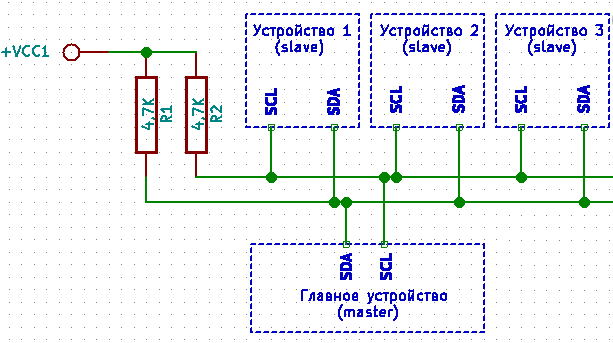
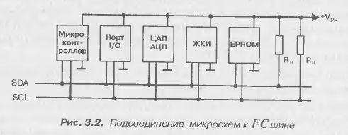
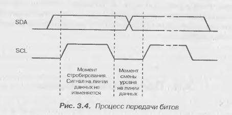
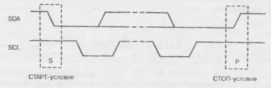
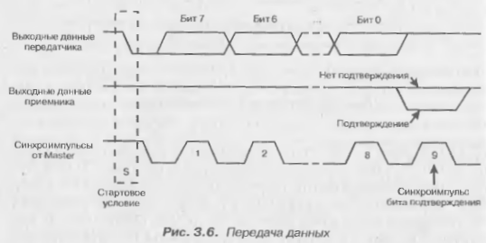
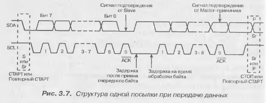
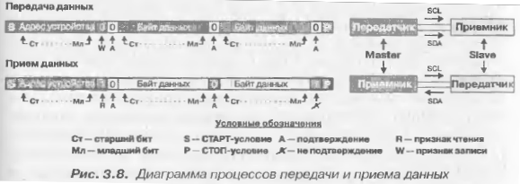

Подтягивающие резисторы от 1кОм до 10кОм.

Из учебника Конструирование устройств на микроконтроллерах, Белов А.В.
Технология применяется для передачи данных между микросхемами на одной плате, хотя передача возможна и по проводам протяженностью до 10м.
Все устройства (ведущие и ведомые) подключаются параллельно к двум шинам: передачи данных (SDA) и тактирования (SCL). У всех устройств должна быть общая шина питания и "нулевая".

Биты передаются по линии SDA только тогда, когда линия SCL "подтянута" к питанию. Смена уровня напряжения на SDA происходит во время низкого уровня на линии SCL.

Но еть два случая, окгда сигнал меняется при высоком уровне на линии SCL - START бит (S) и STOP бит (P).
Старт - это отрицательный перепад (с единицы на ноль) на линии SDA при единице на линии SCL.
Стоп - это положительный перепад (с ноля на единицу) на линии SDA при единице на линии SCL.

Старт и Стоп используются для сонхронизации пакетов. Передача информации по I2C начинается со Старт-условия и заканчивается Стоп-условием. Сразу после Старт-условия передача байта всегда начинается сначала.

Передача производится после Старт-условия старшим битом вперед. После передачи 8 бит, ведущее устройство отпускает линию SDA и формирует еще один импульс синхронизации на линии SCL. Если приемник работает нормально и успел принять все 8 бит, то, получив 9-й импульс по линии SCL, он должен сформировать на линии SDA сигнал подтверждения - перевсти линию в ноль. Приемник проверяет уровень SDA. Если там ноль, то процесс передачи продолжается. Если 1 - то программа приступает к процедуре обработки ошибки.
В случае, если ведущее устройство выступает в роли приемника, оно все так же занимается формированием Старт и Стоп условий, а так же импульсов синхронизации.
При нормальном завершении процесса считывания байта приемник сразу же приступает к считыванию следующего байта.
Реальные устройства после приема байта требуют некотрого времени для обработки полученных данных. Сигнал готовности передается от Slave к Master через линию SCL. Получив байт и выдав в линию сигнал подтверждения, Slave устройство подсаживает линию SCL и удерживает ее в этом состоянии до тех пор, пока не окончит обработку принятого байта. Master Ожидает, пока линия SCL не будет отпущена.

При чтении из Slave устройства ведущему также может потребоваться время для обработки принятого байта. В этом случае оно просто задерживает очередной синхроимпульс до тех пор, пока обработка байта не закончится.
Логический уровень протокола I2C
Принципы работы протокола на логическом уровне иллюстрируются на рис 3.8. Каждый бит изображен в виде квадратика. Серым изображены биты, передаваемые Master'ом, в белые - Slave устройством.

Процесс передачи данных Мастер - Слейв:
1. Мастер формирует СТАРТ-условие;
2. Мастер выдает первый байт, первые 7 бит этого байта - адрес Слейва. 8-й бит = 0, - бит выбора режима (0 - мастер начинает передачу (W), 1 - мастер принимает (R));
3. Все Слейвы, чьи адреса не совпали с адресом из первого байта, переходят в режим ожидания;
4. Слейв подает сигнал подтверждения (А) - подсадив линию SCL на землю;
5. Мастер продолжает передачу байтов данных по 8 бит;
6. Мастер ожидает сигнал подтверждения;
7. -> 5. Процедура повторяется с пункта 5, пока не будут переданы все данные;
8. Мастер завершает передачу СТОП-условием (P).
Процесс приема данных Мастером от Слейва:
1. Мастер формирует СТАРТ-условие;
2. Мастер выдает первый байт, первые 7 бит этого байта - адрес Слейва. 8-й бит = 1, - бит выбора режима (0 - мастер начинает передачу (W), 1 - мастер принимает (R));
3. Все Слейвы, чьи адреса не совпали с адресом из первого байта, переходят в режим ожидания;
4. Слейв подает сигнал подтверждения (А) - подсадив лини SCL на землю;
5. Слейв передает байты данных;
6. Мастер передает сигнал подтверждения;
7. При получении последней посылки Мастер устанавливает сигнал подтверждения = 1.
8. Процесс завершается формированием СТОП-условия.
Адреса Slave устройст могут быть полностью фиксированными (жестко прошит производителем при производстве), либо частично (часть адреса зашита в устройстве, остальная часть адреса определяется при помощи специальных адресных входов, на которые подаются разные комбинации напряжения).